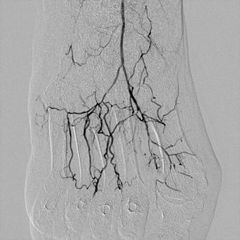

Ангіографія судин головного мозку
Церебральна ангіографія

Церебральна ангіографія використовується для виявлення або виключення патології кровоносних судин головного мозку, таких як:
- аномальні кровоносні судину (судинна мальформація);
- аневризми;
- звуження артерій головного мозку;
- васкуліти.
Такоже дослідження використовується для:
- підтвердження наявності та локалізації пухлини головного мозку;
- оцінки артерій голови та шиї перед операцією;
- визначення наявності тромбів в судинах головного мозком, які можуть стати причиною інсульту.
Надання ургентної допомоги
- стентування судин головного мозку;
- контактний тромболізис;
- виключення із кровотоку потенційно небезпечних ділянок артеріального русла , що можуть призвести до геморрагічного інсульту;